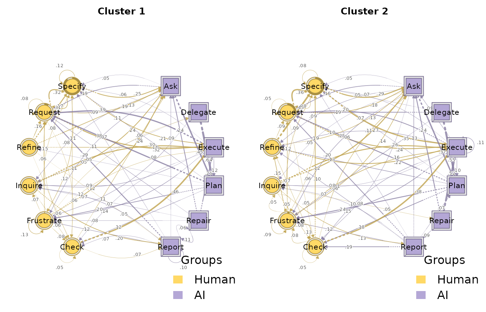
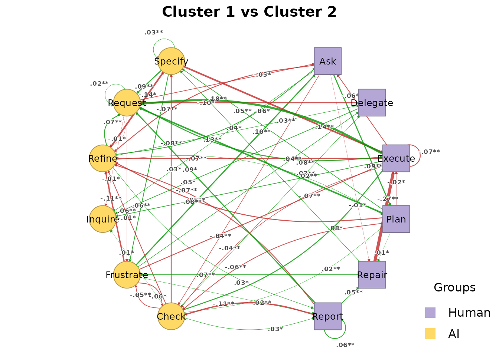

Clustering inputs
Written by Mohammed Saqr and Sonsoles López-Pernas
Source:vignettes/articles/clustering.Rmd
clustering.RmdA network estimated from all sessions describes an average interaction. When the sessions follow different patterns, such as some in which the human specifies and the AI executes in long runs and others in which the two alternate rapidly, the average network describes none of them well. Grouping the sessions by a known variable (a condition, a phase of a course) is one answer; when no such variable exists, the groups have to be found from the sessions themselves. Two families of methods do this. Distance-based clustering groups sessions whose sequences are similar under a distance measure. A mixture of Markov chains groups sessions by the transition process most likely to have generated them, so each cluster is a network in its own right.
build_htna() takes a fitted clustering of an htna
network and returns one heterogeneous network per cluster, each with the
actor partition of the original network. The result is a grouped
network, the same kind of object that
build_htna(..., group = ) returns, so every function that
works on cohorts works on clusters. This guide fits both kinds of
clustering, shows how to choose the number of clusters, and compares the
resulting cluster networks.
Data
human_ai holds 429 sessions of human-AI pair
programming; each row is one coded event.
-
Session:
session_id; the unit that is clustered. -
Code:
code; six human and six AI codes. -
Actor type:
actor_type,"Human"or"AI". -
Order:
order_in_session.
The clusterings start from the htna network of all sessions, which carries the sequences and the actor partition.
data(human_ai)
net <- build_htna(human_ai, actor_type = "actor_type")Clustering sessions by sequence similarity
Nestimate::build_clusters() computes a dissimilarity
between every pair of sessions (Hamming distance by default) and
partitions them with partitioning around medoids into k
clusters.
fit_distance <- Nestimate::build_clusters(net, k = 2, seed = 1)
fit_distance
#> Sequence Clustering [pam]
#> Sequences: 429 | Clusters: 2
#> Dissimilarity: hamming
#> Quality: silhouette = 0.300
#>
#> Cluster N Mean within-dist Medoid
#> 1 288 (67.1%) 36.300 44
#> 2 141 (32.9%) 93.620 303The two clusters hold 288 and 141 sessions, but the partition is weak: the average silhouette is 0.300, and the second cluster has a mean within-cluster distance of 93.6 against 36.3 for the first. The per-cluster diagnostics make the problem explicit.
Nestimate::cluster_diagnostics(fit_distance)
#> Cluster Diagnostics (distance) [pam / hamming]
#> Sequences: 429 | Clusters: 2
#> Quality: silhouette = 0.300
#>
#> Cluster N Mean within-dist Silhouette
#> 1 288 (67.1%) 36.300 0.552
#> 2 141 (32.9%) 93.620 -0.215The second cluster has a negative silhouette (-0.215): on average its sessions are closer to the other cluster’s medoid than to their own. It is a remainder of long, dissimilar sessions rather than a coherent group, which is common for Hamming distances on sequences of very different lengths.
How many clusters?
Nestimate::cluster_choice() fits the distance-based
clustering for a range of k and reports the silhouette and
the cluster sizes.
Nestimate::cluster_choice(net, k = 2:4)
#> Cluster Choice (sweep: k)
#>
#> k silhouette within_dist sizes ratio best
#> 2 0.756 56.3 [11, 418] 38.0 <-- best
#> 3 0.501 49.3 [11, 349] 31.7
#> 4 0.503 48.8 [5, 349] 69.8The highest silhouette (0.756 at k = 2) belongs to a
partition that separates 11 sessions from the other 418, a ratio of 38
between the largest and the smallest cluster. A high silhouette for a
small satellite and one large cluster does not describe two kinds of
collaboration, so the size column has to be read with the silhouette.
Neither criterion supports a distance-based clustering of these
sessions.
Clustering sessions by their transition process
Nestimate::cluster_mmm() fits a mixture of first-order
Markov chains with the EM algorithm. Every session receives a posterior
probability of belonging to each component, and each component has its
own transition matrix.
fit_mmm <- Nestimate::cluster_mmm(net, k = 2, seed = 1)
fit_mmm
#> Mixed Markov Model
#> Sequences: 429 | Clusters: 2 | States: 12
#> ICs: LL = -36345.268 | BIC = 74430.175 | AIC = 73264.537 | ICL = 74510.272
#> Quality: AvePP = 0.921 | Entropy = 0.266 | Class.Err = 7.9%
#>
#> Cluster N Mix% AvePP
#> 1 280 (65.3%) 64.2% 0.932
#> 2 149 (34.7%) 35.8% 0.902The two components hold 280 and 149 sessions. The average posterior
probability of the assigned component is 0.921 (0.932 and 0.902 per
cluster), and the classification error is 7.9%, so the sessions are
assigned with confidence. Nestimate::compare_mmm() compares
mixtures with different numbers of components.
Nestimate::compare_mmm(net, k = 2:3, seed = 1)
#> MMM Model Comparison
#>
#> k log_likelihood AIC BIC ICL AvePP Entropy converged best
#> 2 -36345 73265 74430 74510 0.921 0.266 TRUE <-- BIC
#> 3 -36115 73093 74843 74933 0.914 0.197 TRUEBIC and ICL both prefer two components (BIC 74,430 against 74,843), while the log-likelihood and AIC improve slightly with a third. The two-component mixture is the model to interpret.
One network per cluster
build_htna() turns either fit into a grouped network,
one heterogeneous network per cluster. The fit is not rerun; the
assignments are those of the fit.
clusters <- build_htna(fit_mmm)
as.data.frame(summary(clusters), what = "actor_pairs")
#> group source_actor target_actor n_edges
#> 1 Cluster 1 Human Human 36
#> 2 Cluster 1 Human AI 36
#> 3 Cluster 1 AI Human 36
#> 4 Cluster 1 AI AI 36
#> 5 Cluster 2 Human Human 36
#> 6 Cluster 2 Human AI 36
#> 7 Cluster 2 AI Human 36
#> 8 Cluster 2 AI AI 36Both cluster networks have the same actor partition, and all 36 edges of every actor-pair block are non-zero. The weights of a cluster network are the fitted transition probabilities of its mixture component, which give every transition a non-zero probability, including the transitions never observed in the data. The networks are drawn side by side:

par(op)The distance-based fit is converted in the same way, with
build_htna(fit_distance).
How do the clusters differ?
compare_htna() compares every pair of clusters and
summarizes the differences by actor-pair block.
comparison <- compare_htna(clusters)
comparison
#> HTNA network comparisons: 1 cohort pair
#>
#> --- Cluster 1 vs Cluster 2 ---
#> Pearson correlation of edge weights: 0.877
#> Mean absolute difference: 0.0336
#> source target cells changed mean_diff mean_abs_diff max_abs_diff
#> Human Human 36 36 -0.00666 0.0308 0.139
#> Human AI 36 36 0.00666 0.0319 0.142
#> AI Human 36 36 0.00449 0.0475 0.182
#> AI AI 36 36 -0.00449 0.0243 0.268The two transition processes are more different than the early and
late sessions of the Comparing
networks guide: the correlation of their edge weights is 0.877 and
the mean absolute difference 0.0336. The actor-pair table locates the
differences (Cluster 1 minus Cluster 2). A
human code is followed by another human code with a probability about
0.040 lower in the first cluster (six target codes times -0.00666 per
cell) and by an AI code correspondingly more often, and an AI code hands
back to the human about 0.027 more often (6 x 0.00449). The first
cluster is the more alternating collaboration. The largest single
difference, 0.268, lies in the AI-to-AI block. The similarity,
correlation and distance measures of the two weight matrices are
returned with what = "metrics".
as.data.frame(comparison, what = "metrics")
#> comparison category metric value
#> 1 Cluster 1 vs Cluster 2 Weight Deviations Mean Abs. Diff. 0.0336
#> 2 Cluster 1 vs Cluster 2 Weight Deviations Median Abs. Diff. 0.0189
#> 3 Cluster 1 vs Cluster 2 Weight Deviations RMS Diff. 0.0521
#> 4 Cluster 1 vs Cluster 2 Weight Deviations Max Abs. Diff. 0.2684
#> 5 Cluster 1 vs Cluster 2 Weight Deviations Rel. Mean Abs. Diff. 0.4035
#> 6 Cluster 1 vs Cluster 2 Weight Deviations CV Ratio 1.0124
#> 7 Cluster 1 vs Cluster 2 Correlations Pearson 0.8772
#> 8 Cluster 1 vs Cluster 2 Correlations Spearman 0.8549
#> 9 Cluster 1 vs Cluster 2 Correlations Kendall 0.6823
#> 10 Cluster 1 vs Cluster 2 Correlations Distance 0.8616
#> 11 Cluster 1 vs Cluster 2 Dissimilarities Euclidean 0.6253
#> 12 Cluster 1 vs Cluster 2 Dissimilarities Manhattan 4.8419
#> 13 Cluster 1 vs Cluster 2 Dissimilarities Canberra 40.7741
#> 14 Cluster 1 vs Cluster 2 Dissimilarities Bray-Curtis 0.2017
#> 15 Cluster 1 vs Cluster 2 Dissimilarities Frobenius 0.2553
#> 16 Cluster 1 vs Cluster 2 Similarities Cosine 0.9246
#> 17 Cluster 1 vs Cluster 2 Similarities Jaccard 0.6642
#> 18 Cluster 1 vs Cluster 2 Similarities Dice 0.7983
#> 19 Cluster 1 vs Cluster 2 Similarities Overlap 0.7983
#> 20 Cluster 1 vs Cluster 2 Similarities RV 0.8917
#> 21 Cluster 1 vs Cluster 2 Pattern Similarities Rank Agreement 0.8258
#> 22 Cluster 1 vs Cluster 2 Pattern Similarities Sign Agreement 1.0000A permutation test of the same pair asks whether the differences exceed what random splits of the sessions produce. Because the clusters were formed to differ, a significant result is expected and confirms only that the mixture separated distinct processes; the useful output is where the differences lie.
perm <- permutation_htna(clusters, iter = 200, seed = 1)
perm
#> Grouped Permutation Test
#> Groups: Cluster 1 vs Cluster 2
#>
#> -- Cluster 1 vs Cluster 2 --
#> Permutation Test: Transition Network (relative probabilities) [directed]
#> Iterations: 200 | Alpha: 0.05
#> Nodes: 12 | Edges tested: 144 | Significant: 66
#> Global test (networks differ overall?): M = 4.842 (p = 0.00498) | S = 0.268 (p = 0.00498)
plot_htna_diff(perm)
Both global statistics reach the smallest p-value attainable with 200 permutations (0.00498), and 66 of the 144 edges differ at an unadjusted p-value below 0.05; green edges in the plot are stronger in the first cluster, red edges in the second. The Comparing networks guide explains the three comparisons in detail.
Which clustering to use
| Question | Function |
|---|---|
| Group sessions by the similarity of their sequences |
Nestimate::build_clusters(), then
build_htna(fit)
|
| Group sessions by the transition process that generated them |
Nestimate::cluster_mmm(), then
build_htna(fit)
|
Choose k for distance-based clusters |
Nestimate::cluster_choice() (read sizes with the
silhouette) |
Choose k for a mixture |
Nestimate::compare_mmm() (BIC, ICL) |
| Check one fitted partition | Nestimate::cluster_diagnostics() |
| Compare the cluster networks |
compare_htna(), permutation_htna()
|
For heterogeneous networks the mixture of Markov chains is usually the more informative choice, because its clusters are defined by transition processes, the same object the networks describe.